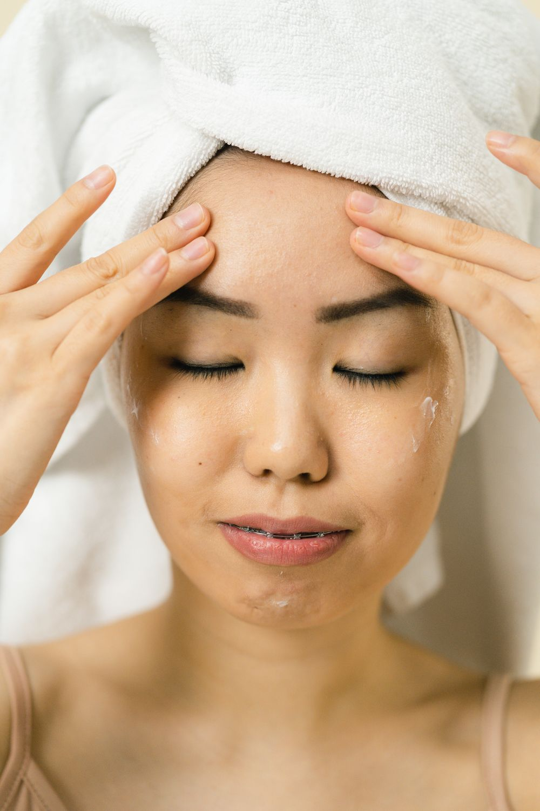
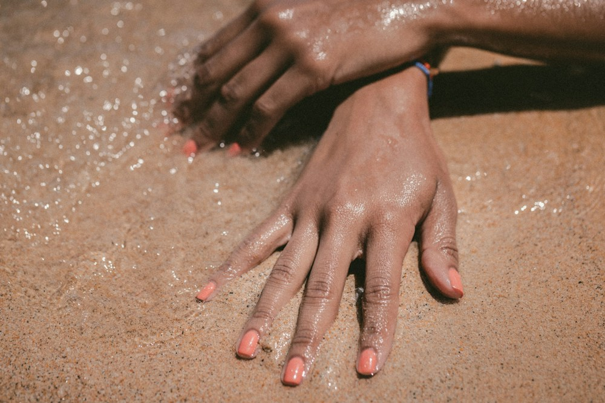

01
Hair
A refresh, a change, or a look that’s entirely your own. Share your inspiration with Yassmeen and explore the right hair service for you.
YASSMEEN HAMADI · BEAUTY STUDIO
CONNECT ON INSTAGRAM ↗Hair, facials and nails.
A little time for yourself.
A look that feels like you.


THE SERVICE EDIT
From your hair to the finishing details, find your reason to take a little time for yourself.
A refresh, a change, or a look that’s entirely your own. Share your inspiration with Yassmeen and explore the right hair service for you.
Make space for a little care. Ask about the facial menu and find a treatment to fit your routine.
Make the details yours. Explore nail services and Gel X information, and bring along the colors and shapes you love.
For the current treatment menu, pricing and availability, please contact Yassmeen directly.
Personal by nature.
HAIR · FACIALS · NAILSBEHIND Y|H
Y|H brings together hair, facials and nails under Yassmeen Hamadi’s name. A place in your routine for the details that make you feel like yourself.
Start with what you have in mind—a favorite look, a question, a little inspiration. Connect with Yassmeen to talk through your service and plan your visit.
MEET YOUR NEXT APPOINTMENT ↗THE MOOD
A little inspiration for your next visit.
For Yassmeen’s own work and studio updates, explore her Instagram.

Editorial inspiration · Photography shown is not studio client work.
EXPLORE YASSMEEN’S INSTAGRAM ↗YOUR VISIT
Tell Yassmeen what you have in mind.
Ask about services, pricing and appointment availability.
Choose your interest and prepare a message to send on Instagram.
Then open Instagram and paste it into your message.
Open Instagram ↗Nothing is sent or stored here. Appointments are confirmed directly with the studio.
A FEW HELPFUL DETAILS
Contact Yassmeen on Instagram to discuss your service and availability. An inquiry does not reserve an appointment; the studio will confirm the details directly.
Ask Yassmeen for the current menu, pricing and service details. Mention the service you’re interested in so she can guide you.
Visit @yassmeenhamadi_ on Instagram for posts and highlights, including Gel X nail information and Salon Q&A.